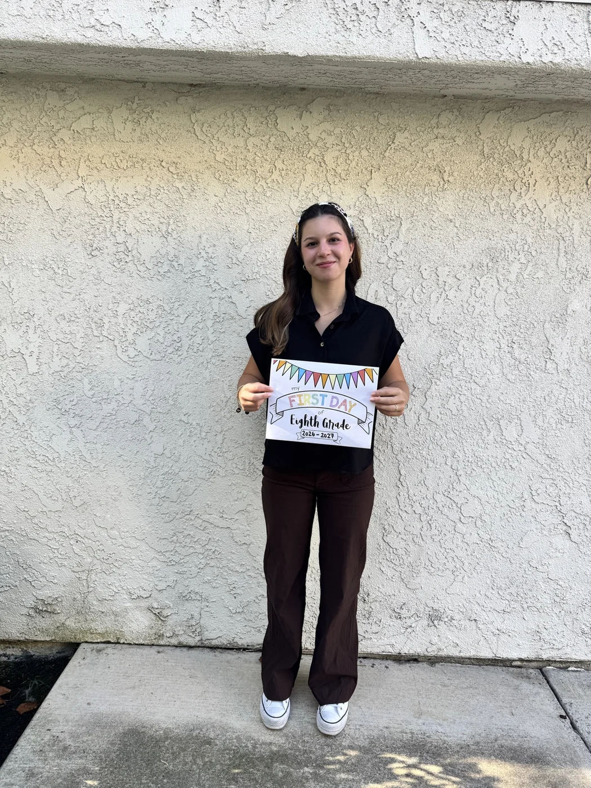

Discovering angle relationships
Paper angle models and tape transversals help students discover and justify congruent and supplementary relationships.
View lesson storyI design learning experiences where students think critically, communicate their reasoning, and make something meaningful with the tools available to them.
UC Irvine MAT candidate · Student teaching Math 8 & Algebra 1
I see teaching as coaching: providing structure and support while helping students become independent problem-solvers.
Help students recognize patterns, connect representations, and explain why their solutions work—not only arrive at an answer.
Use structured discussion, independent think time, language supports, and formative checks to give every student a way into the conversation.
Bring a creative-technology mindset into learning through exploration, prototyping, coding, and student choice.
A collection of math lessons, immersive technology curriculum, and ongoing inquiry research.
Paper angle models and tape transversals help students discover and justify congruent and supplementary relationships.
View lesson storyBeginner-friendly A-Frame and GitHub instructions for students creating immersive, interactive environments.
View curriculum storyExploring how structured discussions and gradually released language supports help students explain their reasoning.
Explore the inquiryPizza, soccer, and game-currency examples connect slope to everyday contexts through an individual whiteboard routine.
View lesson storyStudents choose visual and coordinate-based tasks, with bilingual access and sentence frames that make reasoning visible.
View assessment storyAn interactive learning experience that asks users to navigate classroom scenarios and consider how to build brave, inclusive spaces.
View project storyI'm a secondary math teacher candidate completing a Master of Arts in Teaching and Single Subject Mathematics credential at UC Irvine. At Marco Forster Middle School, I work with Math 8 and Algebra 1 students while growing my practice around meaningful math discussions and formative assessment.
Before moving into education, I studied Creative Technology and Design at CU Boulder and served as a Learning Assistant and Head LA for ATLS 2100: Image. My work sits at the intersection of code, design, making, and instruction.
Coaching competitive climbing taught me something I bring into classrooms: the goal isn't to give someone every move. It's to build their skills, ask useful questions, and help them find their own way forward.

“I want students to leave my classroom with more than an answer. I want them to know how to ask, reason, and create.”
My approach combines clear expectations and scaffolding with opportunities for creativity, discourse, and independence. It grows from my work as a coach, creative technology instructor, and math teacher candidate.
Read my full philosophyAcademic discourse is a schoolwide focus at Marco Forster, where professional development and classroom practice inform my culminating inquiry research.
Read about the inquiry →Current stage: Developing and examining strategies; findings will be added after the research is completed.